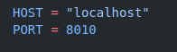
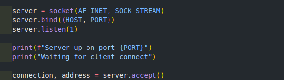
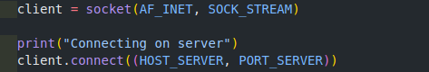
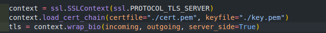
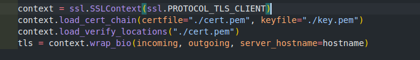

Ferramentas necessárias:
Começando a criar o seu cliente/servidor seguro com TLS
Servidor: Para começar a criarmos nosso servidor, vamos precisar definir um host, e uma porta
para conseguir receber requisições vindo de um cliente.
Primeiramente, precisamos definir um host, uma porta e configurar o TLS
Usaremos o localhost no nosso servidor e utilizaremos a porta 8010:
Agora precisamos subir uma instância do servidor. Para isso precisamos:
1 Passo - Criar um socket
Em python, usamos a biblioteca socket para lidar com esse tipo de dado
Defina uma váriavel server criando uma nova instância de um socket
server = socket(AF_INET, SOCK_STREAM)
2 Passo - Mapear nosso servidor
Agora precisamos mapear nosso servido para a porta e o endereço que escolhemos.
Para isso, usamos o método bind((host, port)) da biblioteca SSL, usando a instância de socket que
acabamos de criar e as váriaveis de HOST e PORT que definimos anteriormente.
server.bind((HOST, PORT))
3 Passo - Ouvir as requisições
Nessa etapa, começaremos a ouvir as requisições vindo de outros clientes. Para fazer isso, usaremos o método listen da instância de servidor.
server.listen(1)
4 Passo - Aceitar as conexões vindas de clientes
Por último, agora iremos "ligar" o nosso servidor com os clientes que desejam comunicar com o nosso
servidor.
Usaremos o método accept. Ele irá retornar uma lista com duas informações:
Assim, depois de todas as etapas, teremos um código dessa forma e teremos um servidor funcional já:

Cliente: O cliente será bem parecido com o servidor. Para criarmos nosso cliente, precisamos do
host usado pelo servidor e a porta.
Para subir uma instância de cliente e consumir nosso servidor, precisamos de:
1 Passo - Pegar as informações do servidor
Basta importar do arquivo do servidor as variáveis de HOST e PORT para nosso cliente.
from servidor import HOST as HOST_SERVER, PORT as PORT_SERVER
2 Passo - Criar um socket
Etapa igual a etapa de criar um socket no servidor.
client = socket(AF_INET, SOCK_STREAM)
3 Passo - Conectar no servidor
Com o servidor no ar, basta conectar no cliente usando a função connect passando a porta e o host do nosso servidor
client.connect((HOST_SERVER, PORT_SERVER))
pp>Assim, depois de todas as etapas, teremos um cliente que já está conectado no nosso servidor:

Comunicação TLS: Queremos uma comunicação segura e que também seja possível ver a mensagem
criptografada que está sendo transmitida.
Para isso, precisamos de algumas coisas:
1 Passo - Gerar um certificado
Para gerar um certificado, basta usar o seguinte comando
openssl req -new -x509 -days 365 -nodes -out cert.pem -keyout key.pem
Esse comando irá gerar um certificado autoassinado e uma chave válida por 365 dias
2 Passo - Criar um contexto TLS
Nesse exemplo, nós queremos visualizar a mensagem criptografada e a mensagem descriptografada. Para
isso, nós precisamos criar um contexto TLS em que nós conseguimos manipular os buffers onde as mensagens
estão armazenadas e conseguir visualizar elas.
A biblioteca ssl nos fornece um método para fazer essa comunicação "manual". Basta usar o método
wrap_bio
Para usarmos essa função, precisamos passar como parâmetro dois buffers gerados pela biblioteca ssl e um
terceiro parâmetro que dependerá se é o cliente ou o servidor que está criando o contexto TLS
No servidor:
buffers = {
"incoming": ssl.MemoryBio(), # para as mensagens que estão saindo do cliente para o servidor e vice versa
"outgoing": ssl.MemoryBio() # para as mensagens que estão chegando do cliente para o servidor e vice versa
}
context = ssl.SSLContext(ssl.PROTOCOL_TLS_SERVER)
context.load_cert_chain(certfile="./cert.pem", keyfile="./key.pem")
tls = context.wrap_bio(buffers['incoming'], buffers['outgoing'], server_side=True) # no servidor, o parametro server_side precisa ser = True
Teremos um código parecido com esse
No cliente:
buffers = {
"incoming": ssl.MemoryBio(), # para as mensagens que estão saindo do cliente para o servidor e vice versa
"outgoing": ssl.MemoryBio() # para as mensagens que estão chegando do cliente para o servidor e vice versa
}
context = ssl.SSLContext(ssl.PROTOCOL_TLS_CLIENT)
context.load_cert_chain(certfile="./cert.pem", keyfile="./key.pem")
context.load_verify_locations('./cert.pem')
tls = context.wrap_bio(buffers['incoming'], buffers['outgoing'], server_hostname=< hostname gerado no certificado >) # no cliente, precisa passar o CN gerado no certificado
Teremos um código parecido com esse

Servidor: Para começar a criarmos nosso servidor, vamos precisar definir um host, e uma porta
para conseguir receber requisições vindo de um cliente.
Primeiramente, precisamos definir um host, uma porta e configurar o TLS
3 Passo - Handshake entre o cliente e o servidor.
Precisamos estabelecer que estamos fazendo uma conversa de maneira segura entre o cliente e o servidor.
Para isso precisamos fazer o handshake entre ambas as partes.
Nesse caso, vamos abstrair o código usado no cliente e no servidor, já que ambos serão iguais.
No servidor:
do_handshake(tls, connection, incoming, outgoing) # será usado a connection vindo do metodo accept e o tls gerado na etapa anterior
No cliente:
do_handshake(tls, client, incoming, outgoing) # será usado client vindo do metodo connect e o tls gerado na etapa anterior
Código do_handshake()
MESSAGE_SIZE_IN_BYTES = 1024
def treat_buffer_read_message(socket, incoming):
try:
data = socket.recv(MESSAGE_SIZE_IN_BYTES)
except Exception as err:
data = 0
if data != 0:
return incoming.write(data)
return data
def treat_buffer_write_message(socket, outgoing):
data = outgoing.read()
if len(data) == 0:
return
socket.sendall(data)
return data
def do_handshake(tls, socket, incoming, outgoing):
isDone = False
print("Doing handshake")
while not isDone:
try:
tls.do_handshake()
print("Handshake has been done successfully")
isDone = True
except ssl.SSLWantWriteError:
treat_buffer_read_message(socket, incoming)
treat_buffer_write_message(socket, outgoing)
except ssl.SSLWantReadError:
treat_buffer_write_message(socket, outgoing)
treat_buffer_read_message(socket, incoming)
treat_buffer_write_message(socket, outgoing)
A função do_handshake() terá 2 funções auxiliares.
Para fazer o handshake, vamos utilizar o método do_handshake da variável do TLS. Esse método, geralmente
irá lançar duas exceções que serão tratadas nesse código
Exceção SSLWantReadError(Segundo a própria documentação do python):
A subclass of SSLError raised by a non-blocking SSL socket when trying to read or write data, but
more data needs to be received on the underlying TCP transport before the request can be
fulfilled.
Basicamente, precisamos receber mais dados antes antes de tentar ler ou escrever dados no socket. E ai
chegamos exatamente nessas duas funções auxiliares
Com isso temos o handshake entre o cliente e o servidor e já conseguimos fazer de maneira segura um envio e recebimento de mensagens.
4 Passo - Enviar as mensagens
Nós não podemos usar as funções de maneira nativa do TLS porque estamos utilizando buffers. Como estamos fazendo de forma manual para conseguirmos ver as mensagens criptografadas, nós precisamos "reescrever" as funções de send e recv.
recv:
Precisamos criar um laço para receber as mensagens que estão sendo enviadas pelo outro lado. Precisamos também tratar a exceção do SSLWantReadError
igual na função do handshake, como já fizemos a função de tratamento do buffer, basta reutilizar ela.
Teremos um código similar a esse:
def recv(configuration, buffers):
while True:
try:
return configuration["tls"].read(MESSAGE_SIZE_IN_BYTES)
except ssl.SSLWantReadError:
treat_buffer_read_message(configuration["socket"], buffers["incoming"])
send:
Para a função de send, usaremos o método write do TLS e a função de tratamento para envio de mensagens. Basta reutilizar ela também
O código será similar a esse:
def send(message, buffers, configuration):
configuration["tls"].write(message)
treat_buffer_write_message(configuration["socket"], buffers["outgoing"])
No servidor:
Agora, precisamos receber nossa mensagem do cliente, após subir o servidor estaremos ouvindo as conexões vinda de clientes e precisamos receber todas as mensagens que são enviadas.
Para isso, precisaremos estar dentro de um laço infinito, recebendo as mensagens do cliente e devolvendo elas. Usaremos as funções definidas anteriormente.
Atenção: para esse exemplo, as mensagens que serão enviadas para o cliente será a mesma mensagem só que invertida.
Exemplo: Cliente envia a string "Olá bom dia". O servidor retornará: "aid mob álO"
while True:
message = recv(configuration, buffers).decode("utf-8")
print("Message received from client: {}".format(message))
send(message[::-1].encode("utf-8"), buffers, configuration)
No cliente:
Iremos utilizar as mesmas funções definidas anteriormente.
O código ficará similar a esse
configuration = make_connection(buffers["incoming"], buffers["outgoing"])
while True:
text = input("Digite sua string maluca: ")
print("--------- SIGILO ---------\n")
mensagem_criptografada = send(text, buffers, configuration)
mensagem = recv(configuration, buffers)
print("Mensagem descriptografada: " + str(text))
print("Mensagem criptografada: " + str(mensagem_criptografada))
print("Mensagem do servidor: " + mensagem.decode("utf-8"))
print("--------- SIGILO ---------\n")
print()
print("--------- INTEGRIDADE ---------\n")
mensagem_original_modificada_criptografada = send(text + " STRING ALEATORIA NO FINAL", buffers, configuration)
mensagem = recv(configuration, buffers)
print("Mensagem criptografada original: " + str(mensagem_criptografada))
print("Mensagem criptografada modificada: " + str(mensagem_original_modificada_criptografada))
print("Mensagem do servidor com a mensagem modificada: ", mensagem)
print("--------- INTEGRIDADE ---------\n")
Cliente sem autenticação: